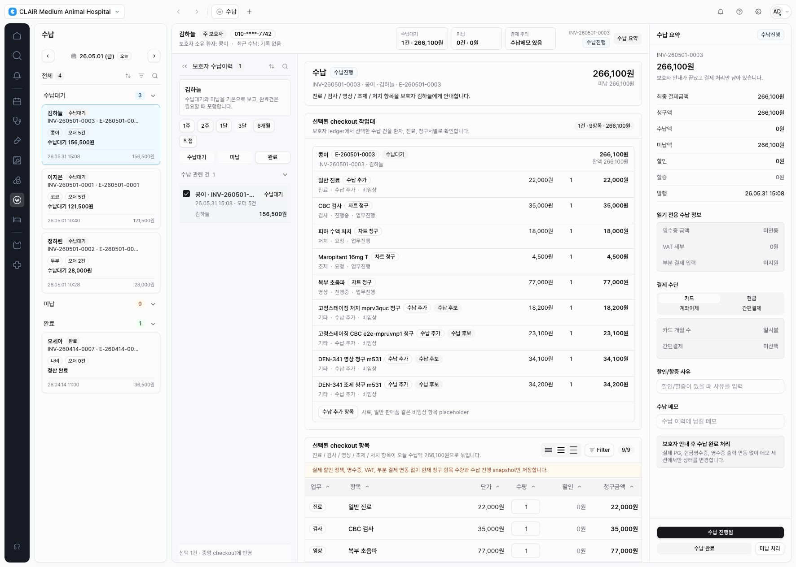
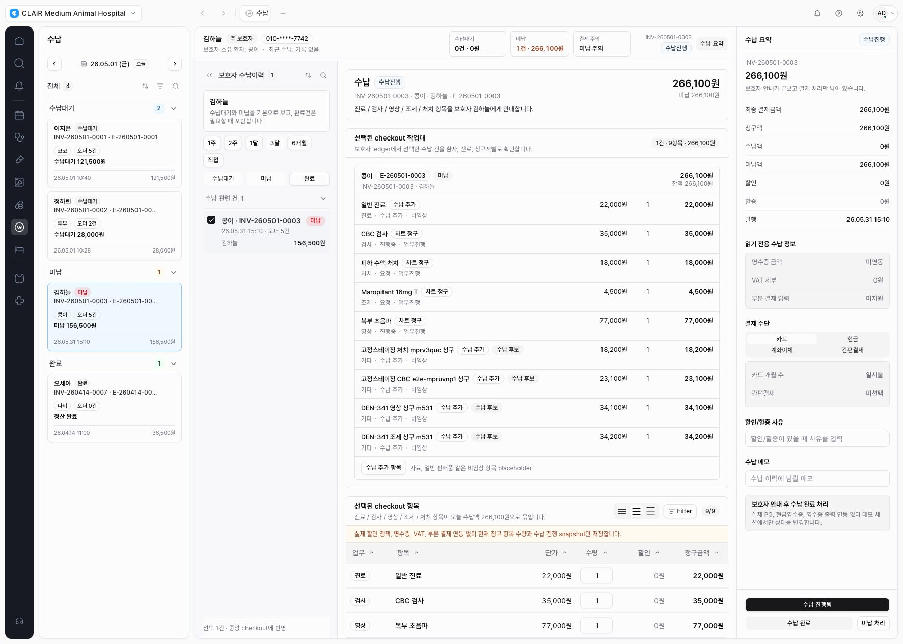
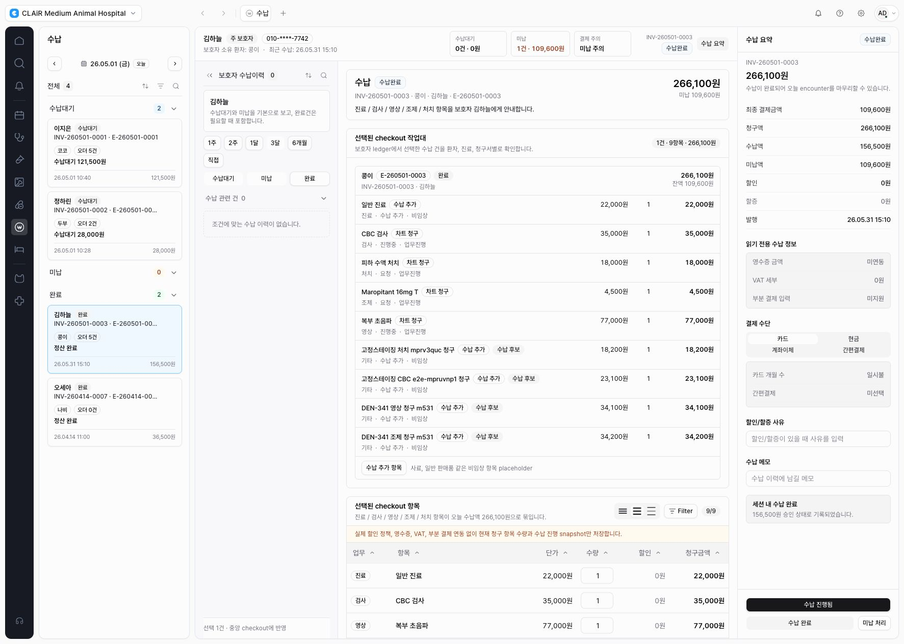

DEN-368 - Fixed staging replay passed
Fixed Staging Guardian Billing Checkout Replay
DEN-368은 보호자 중심 수납 checkout UX가 fixed staging alias에 배포된 상태에서
synthetic replay를 완료했다. 이전 blocker였던 staging alias freshness 문제는 새 preview 배포와
alias 갱신으로 해소했고, 로그인된 staging browser에서 수납 진행,
reason-backed 미납 처리, 수납 완료 흐름이 모두 서버 오류 없이 통과했다.
검증 환경
- Fixed staging URL:
https://emr-app-shell-prototype-staging-mcso0s-projects.vercel.app - 검증 경로:
/w/clair-demo/billing?modulePanel=open&encounterId=encounter-kong-260501&invoiceId=invoice-kong-260501&right=open&aside=history - Preview deployment:
https://emr-app-shell-prototype-qwq46r7xm-mcso0s-projects.vercel.app - Deployment id:
dpl_D47odEN2CavD43ZpRtswnP35VHYs - Vercel inspector:
https://vercel.com/mcso0s-projects/emr-app-shell-prototype/D47odEN2CavD43ZpRtswnP35VHYs - Alias result: fixed staging now points to
emr-app-shell-prototype-qwq46r7xm-mcso0s-projects.vercel.app
Staging Replay 결과
- 상단이 환자 vitals가 아닌 보호자 중심 context bar로 표시된다:
김하늘, 주 보호자, 연락처, 보호자 소유 환자, 수납대기/미납 요약, 결제 주의/메모 신호. - 왼쪽 queue는
수납대기 / 미납 / 완료축으로 표시되고, 보호자별 수납 건을 선택할 수 있다. - 보호자 수납이력 aside는 기간 shortcut, 상태 filter, 수납대기/미납/완료 ledger row를 제공한다.
- 중앙 checkout workspace는 선택된 청구 묶음과 live billing candidate rows를 함께 보여주며, chart 청구와 수납 추가 항목을 구분한다.
- 사용자-facing
청구 확정문구는 replay 화면과 financial dialogs에서 보이지 않는다. 수납 진행 저장은 로그인 staging 세션에서 성공했고수납진행상태로 전환됐다.미납 처리는 사유 입력 전 저장 버튼이 disabled이고, 사유 입력 후 저장이 성공했다.수납 완료 저장은 성공했고 수납 완료 상태와 세션 내 수납 완료 안내가 표시됐다.
Staging Fix
새 UI 배포 뒤 첫 replay에서 수납 진행 저장이 실패했다. 원인은 로그인된 Supabase staging
세션에서 데모 문자열 invoice id(invoice-kong-260501)를 UUID 기반 invoice-line/payment
RPC로 보내는 경계 문제였다. 실제 UUID invoice는 계속 Supabase RPC를 사용하고, 데모 문자열 invoice는
mock persistence boundary로 분리하도록 invoice-lines/payment-status route를 보정했다.
Remote Supabase migration, remote RLS replay, production deploy, real data import는 수행하지 않았다.
Evidence



검증 명령
npx tsc --noEmit --pretty falsenpx playwright test tests/billing-invoice-line-persistence-server.spec.ts tests/billing-payment-status-persistence-server.spec.ts --reporter=linenpx eslint 'src/app/api/workspaces/[workspaceId]/billing/invoice-lines/route.ts' 'src/app/api/workspaces/[workspaceId]/billing/payment-status/route.ts' src/features/billing/server-demo-billing-persistence-boundary.ts tests/billing-invoice-line-persistence-server.spec.ts tests/billing-payment-status-persistence-server.spec.tsnpx playwright test tests/billing.spec.ts -g "billing workspace renders waiting invoice|billing guardian ledger aside|billing unpaid processing requires|billing financial confirmation failure" --reporter=linevercel deploy --scope mcso0s-projects --yespreview build passed.vercel alias set emr-app-shell-prototype-qwq46r7xm-mcso0s-projects.vercel.app emr-app-shell-prototype-staging-mcso0s-projects.vercel.app --scope mcso0s-projects- Fixed staging browser replay for proceed, unpaid, and paid financial actions.
잔여 위험
- 현재 검증은 synthetic staging replay이며, real payment provider, receipt, settlement, tax, refund integration은 범위 밖이다.
- 데모 문자열 invoice boundary는 staging/demo deep link 안정화를 위한 보정이다. 실제 live invoice UUID 경로는 기존 Supabase RPC 경계를 유지한다.
- Combined checkout session, allocation, adjustment persistence는 DEN-365에서 제안한 후속 DB/RPC scope로 남아 있다.
판정
Human Review 권장
DEN-368은 fixed staging 기준 guardian-centered billing checkout replay를 통과했다. 남은 판단은 승욱이 실제 staging 화면의 정보 위계와 CTA copy를 검토하는 Human Review다.